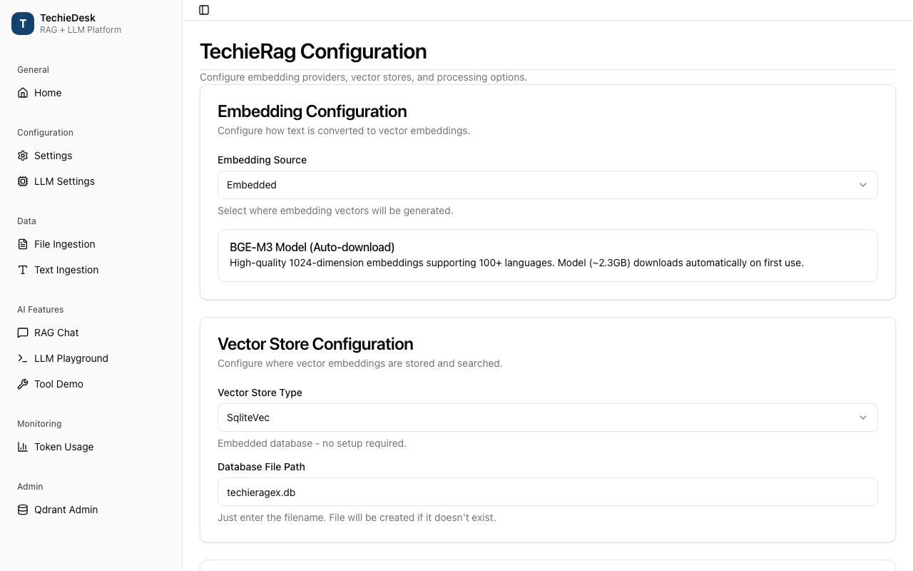

TechieRag — Developer Guide
TechieRag-DevGuide.md- Architecture cheat-sheet
- Screen-by-screen code map
- Ingestion pipeline (IngestAsync / IngestDirectoryAsync)
- Raw text ingestion (IngestTextAsync)
- Configuration and build (TechieRagBuilder.Build and AddTechieRag)
- LLM provider selection and factory
- RAG question answering (AskAsync, AskStreamAsync, ChatWithRagAsync)
- Direct completion, structured output and chat (OpenAICompatibleLlmProvider)
- Tool calling and the agent loop (ToolRegistry, AgentLoopRunner, IToolHandler plug-ins)
- Token tracking and budgets (TokenUsageTracker)
- Vector stores (SqliteVecStore, PgVectorStore, QdrantStore)
- Embedded ONNX embedding and reranking (TechieRag.Embedded)
- Cross-cutting flows
- Data connectors
- MCP client
- Flow orchestration
- Web ingestion
- Workspaces and persistent memory
- Speech
- Telemetry
- Resilience
- Known issues
| App | TechieRag |
| Kind | library |
| Size | Large |
| Phase | 1 of 2 |
| Verified on | 2026-09-24 |
| Date | 2026-09-24 |
⚠ STATIC-ONLY — not runtime-verified
This guide maps each public service of the TechieRag library (packages TechieRag, TechieRag.Embedded, TechieRag.Telemetry under src/, tests under tests/TechieRag.Tests) to the code that serves it, read at file and line on 2026-09-24. The ten screenshots under docs/screenshots/TechieRag/ were captured in July 2026 from the sample application of that time (TechieDesk, now Sevak, which moved to its own repository on 2026-09-24). No sample application can boot in this repository today, so every entry describes what the screenshot showed as static-only (unconfirmed) and links the sample screen that exercised the service. Line numbers are as of "Verified on"; when a line has moved, search for the function named in the same row.
Architecture cheat-sheet#
flowchart LR
Host["Host application"] --> Builder["TechieRagBuilder / AddTechieRag"]
Builder --> Client["TechieRagClient : ITechieRag"]
Client --> Proc["IDocumentProcessor + IChunker"]
Client --> Emb["IEmbeddingProvider"]
Client --> Store["IVectorStore"]
Client --> Rerank["IReranker"]
Client --> Prompt["IPromptTemplate"]
Client --> Llm["ILlmProvider (Retry → Fallback → provider)"]
Llm --> Tracker["TokenUsageTracker"]
Host --> Agent["AgentLoopRunner + IToolHandler"]
Agent --> Llm
Store --> DB[("SQLite / PostgreSQL / Qdrant")]
| Layer | Project or folder | What lives here |
|---|---|---|
| Entry point | src/TechieRag/TechieRagClient.cs, ITechieRag.cs | Ingest, search, ask, chat; owns every abstraction below |
| Composition | src/TechieRag/TechieRagBuilder.cs, DependencyInjection/ | Fluent builder, Build(), three AddTechieRag overloads |
| Abstractions | src/TechieRag/Abstractions/ | ILlmProvider, IEmbeddingProvider, IVectorStore, IReranker, IChunker, IToolHandler, ITokenTracker, stores |
| Providers | src/TechieRag/Llm/, Embedding/, Reranking/, Speech/ | HTTP clients per vendor; LlmConnectorCatalog, ModelRouter, LlmProviderFactory |
| Processing | src/TechieRag/Processors/, Processors/Chunking/ | One processor per file type, TextChunker, four chunkers |
| Storage | src/TechieRag/VectorStores/, Persistence/ | SqliteVecStore, PgVectorStore, QdrantStore; conversation and workspace stores |
| Services | src/TechieRag/Services/ | Retry, fallback, token tracking, tools, agent loop, prompt engine, workspaces, memory |
| Agents | src/TechieRag/Orchestration/, Mcp/ | FlowRunner, guardrails, AgentToolHandler; MCP client, transports, trust policy |
| Sources | src/TechieRag/Connectors/, Web/ | Confluence, repository, email connectors; page and site ingestion |
| Diagnostics | src/TechieRag/Diagnostics/, src/TechieRag.Telemetry/ | BCL ActivitySource/Meter; opt-in OTLP and console exporters |
| Local models | src/TechieRag.Embedded/ | BGE-M3 ONNX embeddings, cross-encoder reranker, model download, native resolver |
Every LLM call passes through the same decorator chain built in TechieRagBuilder.Build(): the concrete provider is wrapped in RetryHandler (TechieRagBuilder.cs:619), then optionally in FallbackLlmHandler (:626). The token tracker subscribes to OnCompletionCompleted on the outermost wrapper (:638). Nothing in the library reads configuration files itself; a host binds TechieRagConfig and hands it to the builder.
Screen-by-screen code map#
Ingestion pipeline (IngestAsync / IngestDirectoryAsync)#

Static-only (unconfirmed): the sample's Ingestion screen let a user pick files or a folder and showed the chunk count per document; it called ITechieRag.IngestAsync (src/TechieRag/ITechieRag.cs:28) or IngestDirectoryAsync (:47).
Call chain: TechieRagClient.IngestAsync (src/TechieRag/TechieRagClient.cs:138) → TechieRagClient.FindProcessor (:778) → IDocumentProcessor.ProcessAsync (src/TechieRag/Abstractions/IDocumentProcessor.cs:36, with DocumentProcessingOptions.Chunker = the configured IChunker) → TechieRagClient.EmbedAndStampAsync (:845) → IEmbeddingProvider.EmbedBatchAsync (src/TechieRag/Abstractions/IEmbeddingProvider.cs:72) → IVectorStore.UpsertBatchAsync (src/TechieRag/Abstractions/IVectorStore.cs:43, e.g. src/TechieRag/VectorStores/SqliteVecStore.cs:206) → TechieRagTelemetry.RecordIngestion (:211).
IngestAsync checks the file exists (:142), lower-cases the extension (:147) and asks FindProcessor for the first processor whose SupportedExtensions contains it (:781). An unknown extension falls back to GenericTextProcessor (:796) unless GenericTextProcessor.IsBinaryExtension (src/TechieRag/Processors/GenericTextProcessor.cs:159) says it is binary, in which case IngestAsync throws NotSupportedException (:152-158). The processor list is fixed in TechieRagBuilder.CreateProcessors (src/TechieRag/TechieRagBuilder.cs:976-1004): eleven typed processors, an optional AudioTranscriptionProcessor when UseSpeechToText was called (:995-998), and GenericTextProcessor last (:1001). The file size is read before the stream is consumed (:171) and stamped on every chunk with DocumentName, SourcePath and FileName (:189-197). Chunk size and overlap come from config.Processing (src/TechieRag/TechieRagConfig.cs:245 default 500, :255 default 50); the chunker is the one Build() chose (TechieRagBuilder.cs:666, CreateChunkerFromStrategy at :742) or RecursiveChunker.Instance (TechieRagClient.cs:86).
EmbedAndStampAsync embeds all chunk texts in one batch and writes both the vector and EmbeddingSignature metadata onto each chunk (:848-855) so stale corpora can be detected later (DetectStaleEmbeddingsAsync, :501). EnsureDocumentExistsAsync (:858) is a no-op that only logs; the store creates the document row during upsert (SqliteVecStore.cs:237). IngestDirectoryAsync (:318) enumerates recursively, filters by GetSupportedExtensions (:808), and calls IngestAsync per file inside a try/catch that logs and continues (:345-354).
| File and line | Function | Watch | Expected value |
|---|---|---|---|
src/TechieRag/TechieRagClient.cs:148 | IngestAsync | processor | the processor whose SupportedExtensions holds the extension; GenericTextProcessor for unknown text types |
src/TechieRag/TechieRagClient.cs:181 | IngestAsync | chunks.Count | greater than zero; zero returns the id without storing anything |
src/TechieRag/TechieRagClient.cs:848 | EmbedAndStampAsync | vectors.Count | equals chunkList.Count; each vector has the provider's Dimensions |
src/TechieRag/TechieRagClient.cs:854 | EmbedAndStampAsync | signature | the provider's EmbeddingSignature, e.g. Embedded-ONNX/bge-m3/r2 |
src/TechieRag/VectorStores/SqliteVecStore.cs:257 | UpsertBatchAsync | vectorBytes.Length | Dimensions * 4 bytes per chunk |
src/TechieRag/TechieRagClient.cs:347 | IngestDirectoryAsync | documentIds.Count | rises by one per file that did not throw |
Calculations on this screen: fileSizeBytes = stream.Length (:171); chunking arithmetic lives in the chosen IChunker.
Raw text ingestion (IngestTextAsync)#

Static-only (unconfirmed): the sample's Text Ingestion screen took pasted text plus a document name and called ITechieRag.IngestTextAsync (src/TechieRag/ITechieRag.cs:38). The same method is the sink for every non-file source: web pages (src/TechieRag/Web/WebIngestionExtensions.cs:165), connector items (src/TechieRag/Connectors/ConnectorIngestionExtensions.cs:57) and workspace text (src/TechieRag/Services/WorkspaceManager.cs:170).
Call chain: TechieRagClient.IngestTextAsync (src/TechieRag/TechieRagClient.cs:226) → TextChunker.ChunkText (src/TechieRag/Processors/TextChunker.cs:34) → IChunker.Chunk (src/TechieRag/Processors/Chunking/RecursiveChunker.cs:22 for the default) → TechieRagClient.EmbedAndStampAsync (:845) → IEmbeddingProvider.EmbedBatchAsync → IVectorStore.UpsertBatchAsync (SqliteVecStore.cs:206) → TechieRagTelemetry.RecordIngestion(count, "text") (:303).
The method rejects empty text or name (:232-233), mints a GUID document id (:237) and computes the UTF-8 byte count as the document size (:243). TextChunker.ChunkText with a chunker argument (TextChunker.cs:34) short-circuits to the built-in recursive splitter when the chunker is null or RecursiveChunker (:36-38) and otherwise delegates to chunker.Chunk (:41). Each chunk becomes a TextChunk with DocumentId, incrementing ChunkIndex, and metadata DocumentName, SourcePath = "text-input", FileName and FileSize (:259-271). Caller metadata is merged afterwards and overwrites those defaults key by key (:274-280), which is how web ingestion replaces SourcePath with the final URL and connectors add SourceType, SourceUrl and Version.
If chunking produced nothing the method logs a warning and returns the id without touching the store (:285-289). Otherwise it embeds and stamps (:293), calls the no-op EnsureDocumentExistsAsync (:296) and upserts (:300). In SqliteVecStore.UpsertBatchAsync the whole batch runs in one transaction (:221): the Documents row is inserted with INSERT OR IGNORE using the first chunk's DocumentName and SourcePath (:231-249), chunks are written with INSERT OR REPLACE (:252-274), the document's ChunkCount is recomputed (:277-280) and the transaction commits (:282). Note the document Metadata column is SerializeDocumentMetadata(firstChunk) (:246, :586), so listing documents later does not return chunk-level metadata; WebIngestionExtensions.WebSourceUrl (WebIngestionExtensions.cs:134) exists because of that.
| File and line | Function | Watch | Expected value |
|---|---|---|---|
src/TechieRag/TechieRagClient.cs:243 | IngestTextAsync | textSizeBytes | UTF-8 byte count of the pasted text |
src/TechieRag/Processors/TextChunker.cs:36 | ChunkText | chunker | null or RecursiveChunker takes the built-in path; any other strategy calls chunker.Chunk |
src/TechieRag/TechieRagClient.cs:278 | IngestTextAsync | chunk.Metadata[kvp.Key] | caller keys overwrite defaults, e.g. SourcePath becomes a URL for web ingestion |
src/TechieRag/TechieRagClient.cs:285 | IngestTextAsync | chunkList.Count | at least one; zero means whitespace-only input |
src/TechieRag/VectorStores/SqliteVecStore.cs:234 | UpsertBatchAsync | docName | the documentName argument, not "Unknown" |
src/TechieRag/VectorStores/SqliteVecStore.cs:282 | UpsertBatchAsync | transaction | commits once; a throw at :286 rolls back the whole batch |
Calculations on this screen: Encoding.UTF8.GetByteCount(text) (:243); chunkIndex++ per chunk (:263).
Configuration and build (TechieRagBuilder.Build and AddTechieRag)#

Static-only (unconfirmed): the sample's Settings screen edited embedding source, vector store and chunking, then rebuilt the client. In library terms that is TechieRagBuilder plus one of the three AddTechieRag overloads in src/TechieRag/DependencyInjection/ServiceCollectionExtensions.cs.
Call chain: ServiceCollectionExtensions.AddTechieRag(IConfiguration) (src/TechieRag/DependencyInjection/ServiceCollectionExtensions.cs:133) → configuration.Get<TechieRagConfig>() (:141) → AddTechieRag(Action<TechieRagBuilder>) (:57) → builder.WithLogging inside the lazy singleton factory (:72-81) → TechieRagBuilder.Build (src/TechieRag/TechieRagBuilder.cs:604) → CreateVectorStore (:850) / CreateEmbeddingProvider (:868) / CreateProcessors (:976) / CreateLlmProvider (:774) / CreateReranker (:687) → new TechieRagClient(...) (:668).
The builder overload registers builder.GetConfig() as a singleton (:68) and defers Build() until ITechieRag is first resolved, so the host's ILoggerFactory can be injected (:75-78). The IConfiguration overload re-applies the bound config through builder calls (:147-247): embedding (:150-155), vector store (:158-160), chunking (:163-166), telemetry flag (:169), Cohere or Jina rerank when an API key exists (:174-185), persistence (:188-194), LLM (:197-206), fallback LLM (:209-220), usage tracking (:223-233) and resilience (:236-246). The TechieRagConfig overload (:272) applies only embedding, vector store, chunk size and telemetry (:281-296). See Known issues for the fields both overloads drop.
Build() constructs in a fixed order. The vector store switch (:852-858) passes only the connection string (and, for Qdrant, the API key), so every store takes its constructor default of 1024 dimensions. When an LLM is configured it is wrapped in RetryHandler (:619) and, if LlmFallback is set, FallbackLlmHandler (:626). Usage tracking creates TokenUsageTracker and subscribes it to OnCompletionCompleted (:633-646). Conversation and workspace stores come from config.Persistence.Provider (:751, :759); memory is DbConversationMemory when a store exists, else InMemoryConversationMemory (:653-657). EmbeddingSource.Embedded throws unless TechieRag.Embedded's UseEmbedded (src/TechieRag.Embedded/TechieRagBuilderExtensions.cs:25) installed a custom factory (:877-879, :37).
| File and line | Function | Watch | Expected value |
|---|---|---|---|
src/TechieRag/DependencyInjection/ServiceCollectionExtensions.cs:141 | AddTechieRag(IConfiguration) | config.VectorStore.Type | the bound enum, e.g. SqliteVec; null config throws InvalidOperationException |
src/TechieRag/DependencyInjection/ServiceCollectionExtensions.cs:75 | AddTechieRag factory | loggerFactory | non-null in a host with logging; null leaves NullLogger |
src/TechieRag/TechieRagBuilder.cs:606 | Build | vectorStore.Name | SQLite-vec, PGVector or the Qdrant store name |
src/TechieRag/TechieRagBuilder.cs:614 | Build | config.Llm.Source | None skips the whole LLM block; anything else must resolve at :808 |
src/TechieRag/TechieRagBuilder.cs:663 | Build | reranker | null unless a source with credentials or a custom factory was set |
src/TechieRag/TechieRagBuilder.cs:854 | CreateVectorStore | config.VectorStore.ConnectionString | Data Source=techierag.db by default from UseSqliteVec (:233) |
Calculations on this screen: none; Build() only composes objects.
LLM provider selection and factory#

Static-only (unconfirmed): the sample's LLM Settings screen chose a provider, model, API key and fallback. The library offers three routes to the same ILlmProvider: an explicit source (UseLlm), a named connector (UseConnectorLlm) or a bare model name (UseLlmForModel).
Call chain: TechieRagBuilder.UseLlmForModel (src/TechieRag/TechieRagBuilder.cs:366) → ModelRouter.Require (src/TechieRag/Llm/ModelRouter.cs:74) → ModelRouter.Resolve (:31) → LlmConnectorCatalog.Find (src/TechieRag/Llm/LlmConnectorCatalog.cs:156) → TechieRagBuilder.ApplyRoute (:369) → Build → CreateLlmProviderFromConfig (:785) → provider constructor (:808-847) → new RetryHandler (src/TechieRag/Services/RetryHandler.cs:60) → new FallbackLlmHandler (src/TechieRag/Services/FallbackLlmHandler.cs:58).
ModelRouter.Resolve first splits connector/model on the first slash (ModelRouter.cs:37-47), then tries the longest matching prefix across LlmConnectorCatalog.All (:52-62); an ambiguous open-weight name returns null and Require throws with the connector list (:76-79). The catalog is a static array of LlmConnectorDescriptor (LlmConnectorCatalog.cs:19-146); multi-vendor hosts such as groq carry no prefixes (:93-129) and local runtimes set RequiresApiKey = false (:130-145). LlmProviderFactory.Create (src/TechieRag/Llm/LlmProviderFactory.cs:32) is the standalone equivalent for hosts that build a provider without the builder: it refuses a missing key when the connector needs one (:41-44) and switches on connector.Source (:46-78).
Inside the builder, CreateLlmProviderFromConfig consults the catalog when Connector is set and Endpoint is empty (:790-806), then switches on Source (:808-847); Ollama and LM Studio default their endpoints, the others throw when endpoint or key is missing. RetryHandler.ExecuteWithRetryAsync (RetryHandler.cs:111) checks the circuit (:113, :177), retries HttpRequestException up to MaxRetries (:125), honours Retry-After from LlmRateLimitException capped at MaxRetryDelayMs (:131-135), waits through the DelayAsync seam (:151) and multiplies the delay (:152); the circuit opens at CircuitBreakerThreshold consecutive failures (:199-206). Streaming methods only check the circuit (:77, :94). FallbackLlmHandler.ChatAsync (FallbackLlmHandler.cs:95) tries the primary (already retry-wrapped) and on any non-cancellation exception switches to the fallback (:102-107); streams are bridged through a Channel (:143-180). The fallback provider itself is built raw at TechieRagBuilder.cs:625 and gets no retry wrapper.
| File and line | Function | Watch | Expected value |
|---|---|---|---|
src/TechieRag/Llm/ModelRouter.cs:64 | Resolve | best | a connector for claude-*, gpt-*, gemini-*; null for llama-3.3-70b |
src/TechieRag/TechieRagBuilder.cs:790 | CreateLlmProviderFromConfig | connector | non-null only when llmConfig.Connector names a catalog row |
src/TechieRag/TechieRagBuilder.cs:808 | CreateLlmProviderFromConfig | llmConfig.Source | one of the six handled sources; None throws at :846 |
src/TechieRag/Services/RetryHandler.cs:125 | ExecuteWithRetryAsync | attempt, delay | delay doubles per attempt up to MaxRetryDelayMs |
src/TechieRag/Services/RetryHandler.cs:179 | EnsureCircuitNotOpen | consecutiveFailures | below CircuitBreakerThreshold, else throws until recovery elapses |
src/TechieRag/Services/FallbackLlmHandler.cs:106 | ChatAsync | usingFallback | flips to true only after the primary threw |
Calculations on this screen: exponential backoff delay = min(delay * BackoffMultiplier, MaxRetryDelayMs) (RetryHandler.cs:152).
RAG question answering (AskAsync, AskStreamAsync, ChatWithRagAsync)#

Static-only (unconfirmed): the sample's RAG Chat screen streamed an answer with source citations; it used AskStreamWithSourcesAsync or ChatWithRagStreamWithSourcesAsync and displayed the Sources event before the tokens.
Call chain: TechieRagClient.AskAsync (src/TechieRag/TechieRagClient.cs:552) → TechieRagClient.SearchAsync(query, topK, filter) (:370) → SearchAsync(query, SearchOptions) (:391) → IEmbeddingProvider.EmbedAsync (:416) → IVectorStore.SearchAsync (:418) → TechieRagClient.ApplyRerankAsync (:459) → IReranker.RerankAsync (src/TechieRag/Abstractions/IReranker.cs:35) → PromptTemplateEngine.BuildRagPrompt (src/TechieRag/Services/PromptTemplateEngine.cs:28) → ILlmProvider.ChatAsync (:567) → RagResponse (:569).
EnsureLlmConfigured (:759) throws when no provider was built. SearchAsync resolves whether to rerank from SearchOptions.Rerank or config.Rerank.Enabled (ResolveRerank, :444), logging and returning false when no IReranker exists (:449-454). It opens a TechieRag.Search activity (:409), embeds the query (:416), fetches max(topK, Rerank.CandidateCount) candidates when reranking (:417; CandidateCount defaults to 20 at src/TechieRag/TechieRagConfig.cs:615), reranks to TopN or topK (:465-468) and records the search histogram (:429).
PromptTemplateEngine.BuildRagPrompt formats the first MaxContextChunks results (PromptTemplateEngine.cs:82, default 5 at TechieRagConfig.cs:572) through ContextChunkTemplate, replacing {index}, {text}, {source}, {score:P0} and {score} (:94-99), then appends the block to the system prompt between --- Retrieved Context --- markers (:107-113). The result is two messages: system and user (:39-43). BuildRagChatPrompt (:47) inserts prior history, skipping system messages (:62-71).
AskStreamAsync (:580) is the same search followed by ChatStreamAsync (:594). ChatWithRagAsync (:601) pulls history from IConversationMemory when the caller passed none (:613-616), searches without a document filter (:618), and after the reply appends both turns to memory (:624-628). AskStreamWithSourcesAsync (:677) yields RagStreamEvent.FromSources first (:689), then one FromToken per token and finally FromCompleted with the whole answer (:700); the chat variant (:704) adds the memory writes before completing (:732-736).
| File and line | Function | Watch | Expected value |
|---|---|---|---|
src/TechieRag/TechieRagClient.cs:402 | SearchAsync | useReranker | true only when requested and reranker is not null |
src/TechieRag/TechieRagClient.cs:416 | SearchAsync | queryVector.Length | the provider's dimension; must match what the store holds |
src/TechieRag/TechieRagClient.cs:418 | SearchAsync | results.Count | up to fetchCount; zero means an empty or mismatched store |
src/TechieRag/Services/PromptTemplateEngine.cs:82 | FormatContext | chunks.Count | at most MaxContextChunks (5) |
src/TechieRag/Services/PromptTemplateEngine.cs:112 | BuildSystemPromptWithContext | return value | system prompt plus the context block, or the prompt alone when nothing was retrieved |
src/TechieRag/TechieRagClient.cs:567 | AskAsync | response.Usage | non-null TokenUsage with ModelName and ProviderName |
Calculations on this screen: fetchCount = useReranker ? max(topK, CandidateCount) : topK (:417); topN = TopN > 0 ? min(TopN, topK) : topK (:465).
Direct completion, structured output and chat (OpenAICompatibleLlmProvider)#

Static-only (unconfirmed): the sample's LLM Playground sent a prompt straight to ILlmProvider.CompleteAsync, ChatStreamAsync or CompleteAsync<T> without retrieval. The provider shown here is OpenAICompatibleLlmProvider; Anthropic, Gemini, Azure AI Foundry, Ollama and LM Studio implement the same ILlmProvider (src/TechieRag/Abstractions/ILlmProvider.cs:16).
Call chain: OpenAICompatibleLlmProvider.CompleteAsync (src/TechieRag/Llm/OpenAICompatibleLlmProvider.cs:109) → OpenAICompatibleLlmProvider.ChatAsync (:134) → BuildRequest (:263) → HttpClient.PostAsync("chat/completions") (:141) → LlmHttpGuard.EnsureSuccess (src/TechieRag/Llm/LlmHttpGuard.cs:27) → JsonSerializer.Deserialize<OpenAIChatResponse> (:145) → ParseToolCalls (:333) → RaiseCompletionEvent (:345).
The constructor keeps the whole endpoint as BaseAddress and posts to the relative path chat/completions (:70-77) so base paths such as /openai/v1 survive; a bearer header is added when a key exists (:79-82). CompleteAsync turns a prompt plus optional SystemPrompt into messages and delegates to ChatAsync (:111-116). BuildRequest maps roles, content parts, tool_call_id and tool_calls (:265-283), sets model from options.Model or ModelName (:287), asks for a final usage chunk when streaming (:295), applies prompt-cache routing (:300), copies sampling options (:302-308), sets response_format = json_object for JsonMode (:310-311) and serialises Tools and ToolChoice (:313-328).
ChatAsync reads prompt_tokens, completion_tokens and cached tokens (:151-153), builds LlmResponse with ToolCalls, FinishReason and the server's model name (:156-170) and raises the completion event (:172). ChatStreamAsync (:177) sends with ResponseHeadersRead (:185), reads server-sent events line by line, skipping anything not prefixed data: (:198), stopping at [DONE] (:201), capturing usage when a chunk carries it (:205-209) and yielding each delta.content (:211-216). When no usage arrived it estimates tokens at four characters each (:222-226, EstimateTokenCount at :257). CompleteAsync<T> (:232) appends "Respond with valid JSON only." (:234), forces JsonMode and a JSON system prompt (:235-241), strips a Markdown fence (:244-250) and deserialises case-insensitively (:252). LlmHttpGuard.EnsureSuccess throws LlmRateLimitException for 429, or 503 with Retry-After (LlmHttpGuard.cs:31-42), which is what RetryHandler honours.
| File and line | Function | Watch | Expected value |
|---|---|---|---|
src/TechieRag/Llm/OpenAICompatibleLlmProvider.cs:106 | EffectiveCompletionsUri | value | {endpoint}/chat/completions, base path preserved |
src/TechieRag/Llm/OpenAICompatibleLlmProvider.cs:138 | ChatAsync | json | request body with model, messages, stream: false |
src/TechieRag/Llm/OpenAICompatibleLlmProvider.cs:142 | ChatAsync | response.StatusCode | 200; 429 becomes LlmRateLimitException |
src/TechieRag/Llm/OpenAICompatibleLlmProvider.cs:211 | ChatStreamAsync | delta | the next text fragment; null on role or usage-only chunks |
src/TechieRag/Llm/OpenAICompatibleLlmProvider.cs:222 | ChatStreamAsync | totalInputTokens | server count, or the estimate when both totals are zero |
src/TechieRag/Llm/OpenAICompatibleLlmProvider.cs:252 | CompleteAsync<T> | content | bare JSON with any code fence removed |
Calculations on this screen: EstimateTokenCount = ceil(text.Length / 4) (:260).
Tool calling and the agent loop (ToolRegistry, AgentLoopRunner, IToolHandler plug-ins)#

Static-only (unconfirmed): the sample's Tool Calling Demo registered a few delegate tools, ran a question through the agent loop and rendered each AgentStep. The library does not run the loop inside TechieRagClient; a host builds AgentLoopRunner with rag.GetLlmProvider() (src/TechieRag/TechieRagClient.cs:742) and an IToolHandler.
Call chain: TechieRagBuilder.WithTools (src/TechieRag/TechieRagBuilder.cs:463) → ToolRegistry.Register (src/TechieRag/Services/ToolRegistry.cs:37) → AgentLoopRunner.RunAsync (src/TechieRag/Services/AgentLoopRunner.cs:66) → ILlmProvider.ChatAsync with Tools (:94) → IToolHandler.ExecuteToolAsync (src/TechieRag/Abstractions/IToolHandler.cs:14, e.g. ToolRegistry.ExecuteToolAsync at ToolRegistry.cs:70) → ChatMessage.Tool(result) appended (:125) → loop until response.HasToolCalls is false (:96).
IToolHandler has two members: ToolDefinitions (IToolHandler.cs:11) and ExecuteToolAsync (:14). ToolRegistry stores a ToolDefinition and a delegate per name (:45-51); an unknown name or a throwing delegate returns an unsuccessful ToolResult rather than an exception (:74-83, :90-99). AgentLoopRunner.RunAsync copies the caller's options and adds Tools = toolHandler.ToolDefinitions with ToolChoice = "auto" (:75-87), then iterates up to maxIterations (default 10, :43): call the model (:94), return on a plain answer (:96-106), otherwise append the assistant message with its tool calls (:116), execute each call (:119-145) and report ToolExecuted steps with IsSuccess and the coded FailureMessage (:132-144). When the budget is spent it forces one final call without tools (:149-165).
Three handlers plug in through the same interface. CompositeToolHandler (src/TechieRag/Services/CompositeToolHandler.cs:20) merges several handlers. AgentToolHandler.ForAgent (src/TechieRag/Orchestration/AgentToolHandler.cs:115) wraps a FlowAgent as one tool with a single input string (BuildSchema, :80) and runs a nested AgentLoopRunner (:144-154); ForFlow (:179) runs a nested FlowRunner (:203) and maps a blocked or exhausted run to an unsuccessful result (:209-237). ExecuteToolAsync (:242) enforces MaxInvocations (default 8, :44) at :257. McpToolHandler.CreateAsync (src/TechieRag/Mcp/McpToolHandler.cs:86) lists each server's tools, names them {server}-{tool} (QualifyToolName, :207), and ExecuteToolAsync (:136) forwards to McpClient.CallToolAsync (:153) and truncates results to McpTrustPolicy.MaxToolResultCharacters (:157, :244). GuardedToolHandler (src/TechieRag/Orchestration/GuardedToolHandler.cs:82) runs guardrails before delegating.
| File and line | Function | Watch | Expected value |
|---|---|---|---|
src/TechieRag/Services/AgentLoopRunner.cs:85 | RunAsync | toolOptions.Tools.Count | the number of registered tools sent to the model |
src/TechieRag/Services/AgentLoopRunner.cs:96 | RunAsync | response.HasToolCalls | true continues the loop; false returns the answer |
src/TechieRag/Services/ToolRegistry.cs:74 | ExecuteToolAsync | toolCall.Name | a registered name; unknown returns IsSuccess = false |
src/TechieRag/Services/AgentLoopRunner.cs:124 | RunAsync | result.Content | the tool's string, or an Error: ... message |
src/TechieRag/Orchestration/AgentToolHandler.cs:257 | ExecuteToolAsync | invocations | at most MaxInvocations; above it the model gets an unavailable: refusal |
src/TechieRag/Mcp/McpToolHandler.cs:157 | ExecuteToolAsync | content.Length | at most MaxToolResultCharacters (100000) plus the truncation marker |
Calculations on this screen: iteration counter versus maxIterations (AgentLoopRunner.cs:89); QualifyToolName hash suffix when a name exceeds 64 characters (McpToolHandler.cs:215-217).
Token tracking and budgets (TokenUsageTracker)#

Static-only (unconfirmed): the sample's Token Usage screen listed per-model totals and estimated cost from ITokenTracker.GetSessionUsage and GetUsageByModel, and showed a budget bar. It obtained the tracker from ITechieRag.GetTokenTracker (src/TechieRag/TechieRagClient.cs:745).
Call chain: TechieRagBuilder.WithUsageTracking (src/TechieRag/TechieRagBuilder.cs:405) → Build creates new TokenUsageTracker(config.UsageTracking) (:635) and subscribes llmProvider.OnCompletionCompleted (:638) → provider RaiseCompletionEvent (src/TechieRag/Llm/OpenAICompatibleLlmProvider.cs:345, OnCompletionCompleted?.Invoke at :350) → TokenUsageTracker.RecordUsage (src/TechieRag/Services/TokenUsageTracker.cs:61) → CalculateCost (:168) → OnUsageRecorded (:71) → CheckBudget (:194) → OnBudgetAlert (:208, :212).
The event is declared on ILlmProvider (src/TechieRag/Abstractions/ILlmProvider.cs:64). Because the builder subscribes on the outermost wrapper, the decorators forward it: RetryHandler re-targets add/remove to its inner provider (src/TechieRag/Services/RetryHandler.cs:48-52) and FallbackLlmHandler subscribes both primary and fallback (src/TechieRag/Services/FallbackLlmHandler.cs:38-50), so a completion served by the fallback is still counted. Every concrete provider raises the event after a completion: OpenAI-compatible at :350, Anthropic at src/TechieRag/Llm/AnthropicLlmProvider.cs:515, Azure AI Foundry :325, Gemini :381, LM Studio :316, Ollama :362. The same helper also records TechieRagTelemetry.RecordLlmCompletion (OpenAICompatibleLlmProvider.cs:347).
TokenUsageTracker's constructor seeds default pricing (InitializeDefaultPricing, :221-231), lets UsageTrackingConfig.Pricing override or add rows (:42-45) and sets a budget when MaxTotalTokens or MaxCostUsd is positive (:48-57). RecordUsage fills EstimatedCostUsd when zero (:65-68) using FindPricing, which matches exactly, then by substring, case-insensitively (:180-192), appends to a ConcurrentBag (:70) and evaluates the budget under a lock (:196-214): BudgetStatus.IsExceeded (src/TechieRag/Models/TokenUsage.cs:100) raises an exceeded alert, IsAlertTriggered (:105) a threshold alert. GetSessionUsage (:77) and GetUsageByModel (:97) aggregate the bag on demand; Reset drains it (:152). When usage tracking is off, TechieRagClient still creates a bare tracker (TechieRagClient.cs:82) but nothing feeds it. BlockOnExceeded is copied onto the budget (:55) and exposed, but no code in the library refuses a call because of it.
| File and line | Function | Watch | Expected value |
|---|---|---|---|
src/TechieRag/TechieRagBuilder.cs:638 | Build | args.InputTokens, args.ModelName | the provider's counts; model name as the provider reports it |
src/TechieRag/Llm/OpenAICompatibleLlmProvider.cs:350 | RaiseCompletionEvent | OnCompletionCompleted | non-null when tracking is on; null means nothing subscribed |
src/TechieRag/Services/TokenUsageTracker.cs:67 | RecordUsage | usage.EstimatedCostUsd | positive when the model matches a pricing row; 0 for unknown models |
src/TechieRag/Services/TokenUsageTracker.cs:187 | FindPricing | kvp.Key | the substring that matched, e.g. gpt-4o for gpt-4o-2024-08-06 |
src/TechieRag/Services/TokenUsageTracker.cs:206 | CheckBudget | status.IsExceeded | true once tokens or cost pass the budget |
src/TechieRag/Services/TokenUsageTracker.cs:87 | GetSessionUsage | records.Length | one record per completion since the last Reset |
Calculations on this screen: cost = input / 1,000,000 * inputPrice + output / 1,000,000 * outputPrice (:175-177).
Vector stores (SqliteVecStore, PgVectorStore, QdrantStore)#

Static-only (unconfirmed): the sample's Qdrant Admin screen listed collections and point counts through IVectorStore.ListDocumentsAsync and GetStatsAsync. All three stores implement IVectorStore (src/TechieRag/Abstractions/IVectorStore.cs:15); SearchAsync is declared at :53.
Call chain: TechieRagClient.SearchAsync (src/TechieRag/TechieRagClient.cs:418) → SqliteVecStore.SearchAsync (src/TechieRag/VectorStores/SqliteVecStore.cs:310) → SqliteVecStore.InitializeAsync (:317, :68) → TryLoadSqliteVecExtension (:76, :118) → ComputeSimilarityFallbackAsync (:325, :340) → ComputeCosineSimilarity (:363, :381) → ordered SearchResult list (:368-372).
SqliteVecStore never loads sqlite-vec. TryLoadSqliteVecExtension (:118-131) contains only a commented connection.LoadExtension("vec0") (:124) and returns false (:125), so sqliteVecAvailable is always false, SearchAsync always takes the managed path at :322-325, and the Array.Empty return at :329 is unreachable. The managed scan selects every chunk with a vector, optionally filtered by DocumentId (:349-353), deserialises each BLOB (DeserializeVector, :614), computes cosine similarity (:381-403; mismatched lengths score 0 at :383), sorts descending and takes topK (:368-372). It is exact but O(chunks). The dimensions field (:32, constructor default 1024 at :47) is stored and never used in SQL.
PgVectorStore (src/TechieRag/VectorStores/PgVectorStore.cs:42, default dimension 1024) creates the Chunks table with a vector({vectorDimension}) column (:108) in InitializeAsync (:61), so the dimension must match the embedding provider or inserts fail. SearchAsync (:347) requires prior initialisation (:354, :657), runs 1 - (Embedding <=> @QueryVector) AS Score ... ORDER BY Embedding <=> @QueryVector LIMIT @TopK (:365-385) with a Pgvector.Vector parameter (:387) and maps rows to SearchResult (:393-416).
QdrantStore (src/TechieRag/VectorStores/QdrantStore.cs:71, apiKey named argument, default dimension 1024) creates the chunks collection with Size = dimensions and Distance.Cosine (:140-147) plus a one-dimensional documents collection (:151-160). SearchAsync (:257) initialises lazily (:263, :502), builds a DocumentId keyword filter when requested (:270-287), calls client.SearchAsync(collectionName, queryVector, filter, limit: topK, payloadSelector: true) (:289-295) and rebuilds chunks from payload (:301, CreateChunkFromPayload at :596).
| File and line | Function | Watch | Expected value |
|---|---|---|---|
src/TechieRag/VectorStores/SqliteVecStore.cs:76 | InitializeAsync | sqliteVecAvailable | always false |
src/TechieRag/VectorStores/SqliteVecStore.cs:353 | ComputeSimilarityFallbackAsync | rows | every stored chunk (or the filtered document's chunks) |
src/TechieRag/VectorStores/SqliteVecStore.cs:383 | ComputeCosineSimilarity | vectorA.Length == vectorB.Length | true; false silently scores 0 after a provider change |
src/TechieRag/VectorStores/PgVectorStore.cs:387 | SearchAsync | queryVector.Length | equals vectorDimension used at :108 |
src/TechieRag/VectorStores/QdrantStore.cs:144 | InitializeAsync | dimensions | 1024 unless a host constructed the store itself |
src/TechieRag/VectorStores/QdrantStore.cs:289 | SearchAsync | searchResult.Count | up to topK scored points |
Calculations on this screen: cosine dot / (|a| * |b|) (SqliteVecStore.cs:386-403); Qdrant size estimate chunks * (dimensions * 4 + 500) (QdrantStore.cs:453).
Embedded ONNX embedding and reranking (TechieRag.Embedded)#

Static-only (unconfirmed): the sample's landing page showed the configured embedding provider ("Embedded-ONNX", bge-m3) and the reranker, with a model download progress bar fed by ModelDownloadService.ProgressChanged.
Call chain: TechieRagBuilderExtensions.UseEmbedded (src/TechieRag.Embedded/TechieRagBuilderExtensions.cs:25) → builder.UseCustomEmbeddingProvider(() => EmbeddedEmbeddingProvider.CreateDefault()) (:37) → EmbeddedEmbeddingProvider.EmbedBatchAsync (src/TechieRag.Embedded/EmbeddedEmbeddingProvider.cs:373) → EnsureInitializedAsync (:229) → InitializeAsync (:180) → EnsureModelDownloadedAsync (:237) → DownloadFileWithProgressAsync (:325) → InitializeFromDirectory (:210) → GenerateEmbedding (:435) → InferenceSession.Run (:472) → Normalize (:509).
GetModelDirectory (:145-150) places the cache at <assembly folder>/models/bge-m3. IsModelDownloaded (:129) treats a model.onnx_data above 2 GB as complete (:139). The download loop (:273-312) walks the five ModelFiles (:59-66), skips complete files, updates the ModelDownloadService singleton (src/TechieRag.Embedded/ModelDownloadService.cs:80, UpdateProgress at :106, ProgressChanged at :101) and fetches from ModelBaseUrl (:43), overridable through TECHIERAG_MODEL_BASE_URL (:36). Progress is also written with Console.WriteLine (:305, :311, :315). InitializeFromDirectory opens an InferenceSession with ORT_ENABLE_ALL (:218-224) and loads the tokenizer (LoadTokenizer, :520), preferring sentencepiece.bpe.model for a tokenizer.json model directory (:527-534).
GenerateEmbedding encodes with two slots reserved (:442), wraps ids in <s>/</s> and shifts each piece id with ToModelId (:432, :451-457), runs the session and prefers a sentence_embedding output, else last_hidden_state with mean pooling (:474-489), then L2-normalises. The encoding revision (:91) feeds EmbeddingSignature (:94). OnnxNativeLibraryResolver.Install (src/TechieRag.Embedded/OnnxNativeLibraryResolver.cs:54) is a module initializer that, on macOS and Linux only (:62), registers a DllImport resolver (:69) mapping onnxruntime.dll to libonnxruntime.dylib or .so (:92) in three candidate paths (:112-125).
UseEmbeddedReranker (TechieRagBuilderExtensions.cs:127) sets RerankSource.LocalOnnx and installs a factory (:139-144). OnnxCrossEncoderReranker.RerankAsync (src/TechieRag.Embedded/OnnxCrossEncoderReranker.cs:247) initialises (:209; download at :330, session :233, tokenizer :236), scores every candidate with ScorePair (:287; pair encoding :294-305, sigmoid :327) and returns the top topN (:268-271).
| File and line | Function | Watch | Expected value |
|---|---|---|---|
src/TechieRag.Embedded/EmbeddedEmbeddingProvider.cs:239 | EnsureModelDownloadedAsync | modelDir | <assembly folder>/models/bge-m3 |
src/TechieRag.Embedded/EmbeddedEmbeddingProvider.cs:243 | EnsureModelDownloadedAsync | IsModelDownloaded() | true skips the download; false enters the semaphore at :254 |
src/TechieRag.Embedded/EmbeddedEmbeddingProvider.cs:307 | EnsureModelDownloadedAsync | url | https://huggingface.co/BAAI/bge-m3/resolve/main/onnx/<file> or the mirror |
src/TechieRag.Embedded/EmbeddedEmbeddingProvider.cs:447 | GenerateEmbedding | seqLength | token count plus 2, at most maxSequenceLength (8192) |
src/TechieRag.Embedded/EmbeddedEmbeddingProvider.cs:480 | GenerateEmbedding | outputTensor.Dimensions | [1, 1024] for sentence_embedding; 3-D triggers mean pooling |
src/TechieRag.Embedded/OnnxCrossEncoderReranker.cs:327 | ScorePair | return value | a 0 to 1 relevance score |
Calculations on this screen: ToModelId = id == 0 ? 3 : id + 1 (EmbeddedEmbeddingProvider.cs:432); mean pooling (:492-507); sigmoid 1 / (1 + e^-logit) (OnnxCrossEncoderReranker.cs:327).
Cross-cutting flows#
Data connectors#
ITechieRag.IngestConnectorAsync (src/TechieRag/Connectors/ConnectorIngestionExtensions.cs:23) creates a ConnectorRunner and calls RunAsync (:33), skips items with no text (:47) and ingests the rest through IngestTextAsync with BuildMetadata (:57, :67). ConnectorRunner.RunAsync (src/TechieRag/Connectors/ConnectorRunner.cs:45) pages through IDataConnector.ListAsync (:90) up to MaxPages (:82), skips unchanged items via previousSync.IsUnchanged (:116), rejects oversized items from the listing (:131), waits RequestDelay between fetches (:142), calls FetchAsync (:150), records one failure per bad item and throws after MaxConsecutiveFailures (:162-177), stops at MaxTotalBytes (:195) and prunes stale versions only after a complete walk (:216-222). The three connectors implement IDataConnector (src/TechieRag/Connectors/IDataConnector.cs:29).
| Connector | Class | List / Fetch |
|---|---|---|
| Confluence | src/TechieRag/Connectors/Confluence/ConfluenceConnector.cs:42 | :85 / :132 |
| Repository | src/TechieRag/Connectors/Repository/RepositoryConnector.cs:29 | :67 / :81 |
src/TechieRag/Connectors/Email/EmailConnector.cs:36 (ListsEntireSource = false, :74) | :77 / :120 |
Break at ConnectorRunner.cs:150 and watch item.Id and item.Version; a version recorded at :190 means the item will be skipped next run.
MCP client#
McpClient.Create (src/TechieRag/Mcp/McpClient.cs:82) picks StdioMcpTransport or HttpMcpTransport (:87-92); both constructors call McpServerConfig.Validate(policy) (src/TechieRag/Mcp/StdioMcpTransport.cs:60, src/TechieRag/Mcp/HttpMcpTransport.cs:53; FindProblems at src/TechieRag/Mcp/McpServerConfig.cs:104). InitializeAsync (McpClient.cs:103) starts the transport (:107), sends initialize (:120) and notifications/initialized (:129). ListToolsAsync (:145) pages with nextCursor (:179) and drops tools outside AllowedTools (:167); CallToolAsync (:194) refuses a tool not in the allow-list before any I/O (:201) and flattens content to text (:220, :260). McpTrustPolicy (src/TechieRag/Mcp/McpTrustPolicy.cs:22) defaults closed: Strict (:29), AllowLocalProcessLaunch = false (:40), AllowPlaintextHttp = false (:62), MaxToolResultCharacters = 100000 (:72). StdioMcpTransport.StartAsync re-checks the launch permission at the moment of Process.Start (:75, :117). McpAgentExtensions.BuildWorkspaceToolsAsync (src/TechieRag/Mcp/McpAgentExtensions.cs:124) assembles a handler that tolerates one failing server. Break at McpClient.cs:214 and watch parameters["name"].
Flow orchestration#
FlowRunner.RunAsync (src/TechieRag/Orchestration/FlowRunner.cs:92) validates the definition (:101), resolves the start node (:118) and loops (:123) until a terminal node (:192), a block (:162), the MaxSteps budget (:127) or no satisfied edge (:228). ExecuteNodeAsync (:238) builds the guardrail chain (:256, FlowGuardrailChain.BuildAsync at src/TechieRag/Orchestration/FlowGuardrailChain.cs:68, host guardrails first at :74, unresolvable ids deny at :84), evaluates the Input stage (:259), dispatches on node kind (:271-277), then evaluates Output (:281). RunAgentNodeAsync (:301) resolves the agent through FlowRuntime.Agents (:305), wraps its tools in GuardedToolHandler (:324; ToolCall stage at src/TechieRag/Orchestration/GuardedToolHandler.cs:89) and runs AgentLoopRunner (:328-344). FlowRuntime (src/TechieRag/Orchestration/FlowRuntime.cs:66) carries Agents, Guardrails, Tools, HostGuardrails and SystemPreamble (:80-105). Every person-facing sentence is a FlowMessage (src/TechieRag/Orchestration/FlowMessage.cs:35, Create at :72) with a stable code. FlowGuardrailChain.EvaluateAsync (FlowGuardrailChain.cs:98) treats a faulting guardrail as a block (:121-129). Break at FlowRunner.cs:159 and watch step.Blocked and step.Output.
Web ingestion#
IngestUrlAsync (src/TechieRag/Web/WebIngestionExtensions.cs:24) fetches one page through IWebContentFetcher.FetchAsync (:34; HttpWebContentFetcher.FetchAsync at src/TechieRag/Web/HttpWebContentFetcher.cs:40, capped at MaxContentBytes 8 MB, :19) and calls IngestPageAsync (:118), which writes SourceUrl and SourcePath both as the final URL (:137-142). IngestSiteAsync (:45) runs SiteCrawler.CrawlAsync (src/TechieRag/Web/SiteCrawler.cs:43), which refuses non-http seeds (:51) and private-network hosts (:57), bounds pages (:71) and depth (:103) and delays between requests (:78). HttpWebContentFetcher.CreateGuardedHandler (:291) blocks private addresses at connect time (:310). Break at WebIngestionExtensions.cs:123 and watch page.Text.
Workspaces and persistent memory#
TechieRagClient builds a WorkspaceManager only when a workspace store exists (src/TechieRag/TechieRagClient.cs:88-90) and exposes it via GetWorkspaceManager (:757); WithPersistence (src/TechieRag/TechieRagBuilder.cs:574) selects Sqlite* or Postgres* stores (:751, :759). WorkspaceManager.AskAsync (src/TechieRag/Services/WorkspaceManager.cs:425) loads the workspace (:437), composes context (:438, ComposeContextAsync at :649: scope :655, search :656, pinned chunks :658, budget :665, truncation event :666), returns the fixed "not covered" answer in Query mode with no context (:441-451) and otherwise prompts the LLM (:455-456). ApplyContextBudget (:711) evicts retrieved before pinned chunks. DbConversationMemory (src/TechieRag/Services/DbConversationMemory.cs:31) creates a thread lazily (EnsureThreadAsync, :101) and delegates to IConversationStore (:49, :56); RelationalConversationStore creates tables in InitializeAsync (src/TechieRag/Persistence/RelationalConversationStore.cs:38) and stores messages at :226. RelationalWorkspaceStore (src/TechieRag/Persistence/RelationalWorkspaceStore.cs:31) handles documents (:155), hashes (:207) and pins (:219). Break at WorkspaceManager.cs:665 and watch pinnedUnique.Count and retrievedUnique.Count.
Speech#
UseSpeechToText (src/TechieRag/TechieRagBuilder.cs:30) stores the provider; CreateProcessors adds AudioTranscriptionProcessor before the generic fallback (:995-998). AudioTranscriptionProcessor.ProcessAsync (src/TechieRag/Processors/AudioTranscriptionProcessor.cs:82) calls ISpeechToText.TranscribeAsync with segments requested (:93-101) and chunks by segment or by text (:110-112). OpenAICompatibleSpeechToText.TranscribeAsync (src/TechieRag/Speech/OpenAICompatibleSpeechToText.cs:108) rejects non-audio extensions (:117-122), posts a multipart form (:126-128) through LlmHttpGuard.EnsureSuccess (:131) and parses the transcript (:134). OpenAICompatibleTextToSpeech.SynthesizeAsync (src/TechieRag/Speech/OpenAICompatibleTextToSpeech.cs:124) is the reverse path. Break at AudioTranscriptionProcessor.cs:103 and watch transcript.Segments.Count.
Telemetry#
TechieRagTelemetry (src/TechieRag/Diagnostics/TechieRagTelemetry.cs:61) owns one ActivitySource and one Meter named TechieRag (:80-99); Enabled defaults to false (:109), so StartActivity (:121), RecordLlmCompletion (:133), RecordIngestion (:161) and RecordSearch (:174) are no-ops until a host flips it. Callers: TechieRagClient.cs:409, :429, :211, :303 and every provider's completion helper (OpenAICompatibleLlmProvider.cs:347). The TechieRag.Telemetry package adds exporters: TechieRagTelemetryPipeline.Create (src/TechieRag.Telemetry/TechieRagTelemetryPipeline.cs:66) returns an inert pipeline when neither flag is set (:70-73), validates a non-loopback OTLP endpoint (:77; TechieRagTelemetryOptions.ValidateEndpoint at src/TechieRag.Telemetry/TechieRagTelemetryOptions.cs:76, default http://localhost:4318 at :21), builds tracer and meter providers (:80-81) and sets TechieRagTelemetry.Enabled = true (:84), restoring it on Dispose (:109-112). AddTechieRagTelemetry (src/TechieRag.Telemetry/TechieRagTelemetryServiceCollectionExtensions.cs:27) registers it lazily (:33). Break at TechieRagTelemetry.cs:143 and watch Enabled.
Resilience#
LLM calls: WithResilience (src/TechieRag/TechieRagBuilder.cs:444) fills ResilienceConfig (src/TechieRag/TechieRagConfig.cs:646), consumed by RetryHandler (src/TechieRag/Services/RetryHandler.cs:111-175) with LlmHttpGuard.EnsureSuccess (src/TechieRag/Llm/LlmHttpGuard.cs:27) turning 429 and 503-with-Retry-After into LlmRateLimitException. Connectors: consecutive-failure circuit at ConnectorRunner.cs:168. MCP: result truncation at McpToolHandler.cs:244 and per-request timeout from McpServerConfig.TimeoutSeconds (HttpMcpTransport.cs:63). Web: response cap at HttpWebContentFetcher.cs:19 and private-network refusal at :310. Agent loop: maxIterations (AgentLoopRunner.cs:89) and AgentToolHandler.MaxInvocations (AgentToolHandler.cs:257). Flows: MaxSteps (FlowRunner.cs:127). Break at RetryHandler.cs:127 to see a failure counted.
Known issues#
- sqlite-vec is never loaded:
src/TechieRag/VectorStores/SqliteVecStore.cs:118-131returns false with theLoadExtensioncall commented out at:124, so every search runs the managed O(n) cosine scan at:340-373and the branch at:328-329is dead code. REQ-RAG vector-store performance. - Every vector store is built with the 1024 default dimension:
src/TechieRag/TechieRagBuilder.cs:854,:856and:865pass no dimension, soSqliteVecStore.cs:47,QdrantStore.cs:71andPgVectorStore.cs:42default to 1024 andconfig.Embedding.Dimensions(TechieRagConfig.cs:173) is ignored; a 384- or 1536-dimension provider breaks PgVector inserts and Qdrant collections. AddTechieRag(IConfiguration)drops settings:src/TechieRag/DependencyInjection/ServiceCollectionExtensions.cs:158-160omitsVectorStore.ApiKey;:150-155callsUseEmbedding, which rebuildsEmbeddingConfig(TechieRagBuilder.cs:51-58) withoutDimensions,ApiFormat,ApiPathorRequestDelayMs; thePromptsection (TechieRagConfig.cs:64) is never applied. TheTechieRagConfigoverload (:272-298) additionally drops LLM, rerank, persistence, usage and resilience.TechieRagConfig.EnableTelemetry(TechieRagConfig.cs:52, default true) is written byWithTelemetry(TechieRagBuilder.cs:263) but read by nothing; the real gate isTechieRagTelemetry.Enabled(src/TechieRag/Diagnostics/TechieRagTelemetry.cs:109, default false).UsageTrackingConfig.BlockOnExceeded(TechieRagConfig.cs:545) is copied to the budget (TokenUsageTracker.cs:55) but no code blocks a completion; onlyOnBudgetAlertfires (:208).- Download progress is written with
Console.WriteLineinsrc/TechieRag.Embedded/EmbeddedEmbeddingProvider.cs:305,:311and:315, beside theModelDownloadServiceprogress the same method already reports. - Model cache location:
EmbeddedEmbeddingProvider.GetModelDirectory(:145-150) andOnnxCrossEncoderReranker.GetModelDirectory(src/TechieRag.Embedded/OnnxCrossEncoderReranker.cs:172-177) resolve under the executing assembly's folder, while the live tests stage weights under~/.cache/techierag-models(tests/TechieRag.Tests/Reranking/Live/LiveRerankerFactAttribute.cs:38-42,LiveEmbeddedTokenizerDiagnosticTests.cs:47-49), so a developer's cached download is not found by the library unless copied. src/TechieRag/Telemetry/is an empty folder holding only.gitkeep; the telemetry code lives insrc/TechieRag/Diagnostics/andsrc/TechieRag.Telemetry/.ConfigureAwait(false)is inconsistent:TechieRagClient.csapplies it on 30 of 44 awaits (missing at:173,:201,:208,:481,:510among others),SqliteVecStore.cson 0 of 46 andEmbeddedEmbeddingProvider.cson 0 of 13, whileWorkspaceManager.csapplies it everywhere.TechieRag.Telemetryis never packed:.github/workflows/publish-nuget.yml:113-114and.github/workflows/publish-github-packages.yml:86-87pack onlyTechieRagandTechieRag.Embedded, althoughsrc/TechieRag.Telemetry/TechieRag.Telemetry.csproj:16declaresPackageIdTechieRag.Telemetry..github/workflows/publish-github-packages.yml:140-165(publish-nuget-orgjob) pushes to nuget.org on everyv*tag when theNUGET_API_KEYsecret exists, with--skip-duplicate; this contradicts the header ofpublish-nuget.yml(lines 1-31), which states nothing publishes to nuget.org automatically and that the version comes from the tag throughdetermine-version.sh.